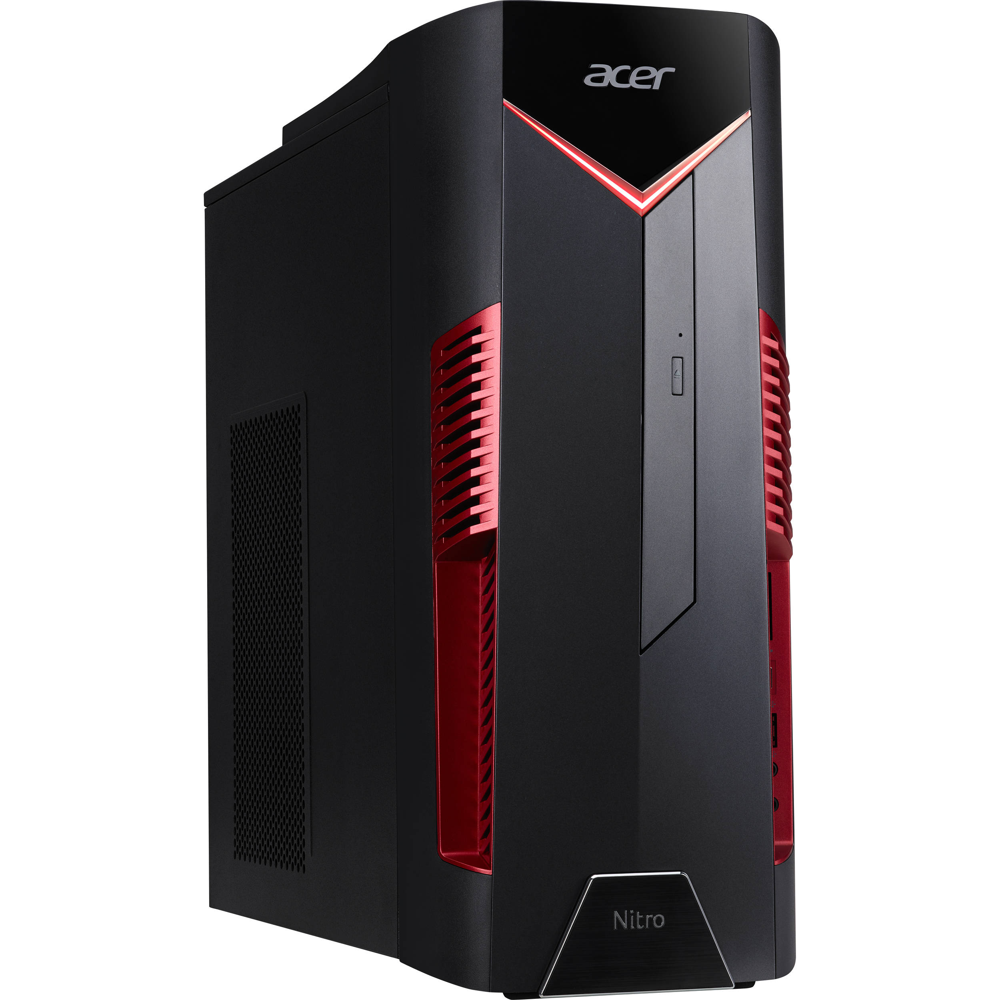

Acer Nitro 50
Cena: 6199,00 zł

Procesor:
Intel Core i7-12700F (12 rdzeni, 20 wątków, 2.10-4.90 GHz, 25 MB cache)
Chipset:
Intel B660
Pamięć RAM:
32 GB (DIMM DDR4, 3200 MHz)
Maksymalna obsługiwana ilość pamięci RAM:
32 GB
Liczba gniazd pamięci (ogółem / wolne):
2/0
Karta graficzna:
NVIDIA GeForce RTX 3060
Wielkość pamięci karty graficznej:
6144 MB GDDR6 (pamięć własna)
Dysk SSD PCIe:
1024 GB
Opcje dołożenia dysków:
Możliwość montażu dwóch dysków SATA (brak elementów montażowych)
Możliwość montażu dysku M.2 PCIe (brak elementów montażowych)
Wbudowane napędy optyczne:
Brak
Dźwięk:
Zintegrowana karta dźwiękowa
Łączność:
Wi-Fi 6 (802.11 a/b/g/n/ac/ax)
LAN 10/100/1000 Mbps
Bluetooth
Złącza - panel przedni:
USB 3.2 Gen. 1 - 1 szt.
USB Type-C - 1 szt.
Wejście mikrofonowe - 1 szt.
Wyjście słuchawkowe/wejście mikrofonowe - 1 szt.
Złącza - panel tylny:
USB 2.0 - 4 szt.
USB 3.2 Gen. 1 - 2 szt.
Wejście/wyjścia audio - 3 szt.
RJ-45 (LAN) - 1 szt.
HDMI (karta graficzna) - 1 szt.
Display Port (karta graficzna) - 3 szt.
AC-in (wejście zasilania) - 1 szt.
Porty wewnętrzne (wolne):
SATA III - 2 szt.
M.2 PCIe - 1 szt.
Kieszeń wewnętrzna 3,5"/2,5" - 2 szt.
Zasilacz:
500 W
Podświetlenie obudowy:
Jednokolorowe
Tryby podświetlenia:
Stały
Dodatkowe informacje:
Możliwość zabezpieczenia linką (port Kensington Lock)
Dołączone akcesoria:
Kabel zasilający
System operacyjny:
Microsoft Windows 11 Home
Dołączone oprogramowanie:
Partycja recovery (opcja przywrócenia systemu z dysku)
Wysokość:
360 mm
Szerokość:
175 mm
Głębokość:
390 mm
Waga:
6,7 kg
Gwarancja:
24 miesiące (gwarancja x-kom sp. z o.o.)